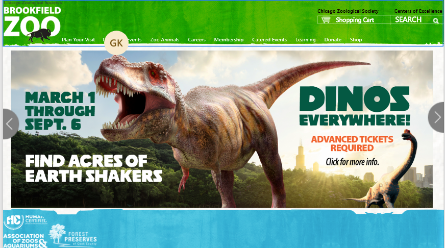

Some things that would make this website less culttered would probility be less images, less words and more to the point with there paragraphs having less menues that you have to go through
A couple of things that would make the website more helpful to others having a color blind mode on the bottom of the screen since there are alot of pictures and having some sort of TTS(Text To Speach)mode for people who cant read or see good to ahve some way to read the website
